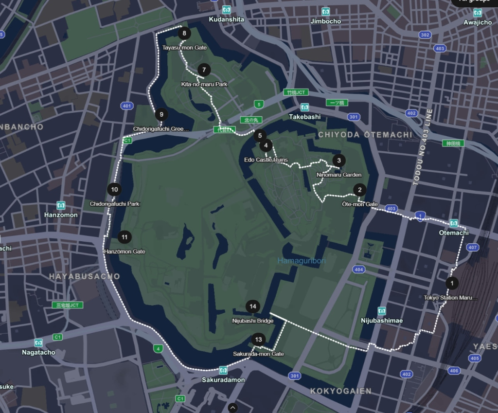

Family Travel Hub
Tokyo Autumn 2026

Tokyo Family Adventure & Disney
Paid (KRW)
₩2,462,000
Paid (PHP)
₱104,747.77
Food Budget
JP¥150,000
52
9-Day Schedule
14 Items
₩ / ₱ / ¥ Ledger
12 Spots
Food & Checklists
Step-by-Step Walking Route

Tokyo Sta. → Kokyo Gaien → East Gardens → Kitanomaru → Nijubashi
Distance
3.5 – 4.0 km
Est. Time
2 – 3 Hours
Pace
Family Leisure
Standard scenic route from Tokyo Station red-brick central exit through Gyoko-dori avenue, Kokyo Gaien outer plaza, Nijubashi Bridge, Ōte-mon Gate, and into the East National Gardens. Tap any stop for full directions & side panel info.
Tokyo Station (Marunouchi Side)
Exit toward Marunouchi central side down Gyoko-dori Avenue.
Kokyo Gaien Garden & Kusunoki Statue
Open gravel plaza with striking bronze samurai warrior statue.
Nijubashi Bridge (Seimon-tetsubashi)
Definitive Imperial Palace postcard double-bridge photo view.
Ōte-mon Gate (East Entrance)
Heavy security checkpoint and massive defensive stone castle walls.
East Gardens & Edo Castle Keep
Ninomaru garden, samurai guardhouse & Tenshudai foundation.
Tokyo Station (Marunouchi Exit)
Start point • Walk down Gyoko-dori toward Otemachi.
Ōte-mon Gate (Otemon)
Primary public entrance • Free entry token.
Ninomaru Garden & Tenshudai Keep
Pond garden, 100-man guardhouse & castle keep ruins.
Kitahanebashi-mon Gate
Historic drawbridge exit toward Kitanomaru Park.
Kitanomaru Park & Tayasu-mon Gate
Budokan arena, autumn lawns & 1636 castle gate.
Chidorigafuchi Moat & Promenade
700m elevated scenic walkway high above western moat.
Hanzō-mon Gate
Ninja commander Hattori Hanzo gate & long Sakurada moat view.
Sakurada-mon Gate
Double defensive gate of 1860 incident & plaza entrance.
Nijubashi Bridge Viewpoint
Seimon Ishibashi & Iron Bridge ceremonial viewing plaza.
Total Walking Distance: Approx. 3.5 to 4 km (Circuit A) or 6.5 to 7 km (Full Circuit B).
Estimated Time: 2 to 3.5 hours depending on East Gardens exploration.
Convenient Finish / Transit: Exit via northern Kitahanebashi-mon toward Takebashi Sta. (Tozai Line) or Kudanshita Sta. (Hanzomon / Shinjuku Lines), or complete the loop back to Tokyo Station.
Flight Schedule (Air Premia)
Incheon (ICN) ↔ Narita (NRT)
08:45
Incheon T1
2h 45m
Direct
11:20
Narita T2
12:30
Narita T2
2h 50m
Direct
15:20
Incheon T1
Airbnb — Home in Sumida
Oct. 31 – Nov. 8, 2026 (8 Nights)
Nearby Konbini & Key Addresses
Yahiro / AsakusaLawson
Yahiro 1-Chome Shop (Nearest to Airbnb)
Family Mart
Yahiro 6-Chome Shop
Katsuya Asakusa
1-33-3 Asakusa • Katsudon (Day 4 Bfast)
Ichiran Asakusa (Closes 10PM)
1 Chome-1-16 Asakusa • Pork Tonkotsu Ramen
Tokyo Metropolitan Government Office
Shinjuku (Day 4 & Day 7 Viewpoint)
Oct 31 – Nov 8, 2026
9-Day Itinerary
Sheet1 Master Ledger
Trip Budget
Actual Paid (KRW)
₩2,462,000
Tentative: ₩5,792,000
Actual Paid (PHP)
₱104,747.77
Includes BPI bookings
Daily Food Pocket Money (9 Days)
JP¥150,000 (Sheet1 Target: ¥160,000)
Priced Meals
¥18,303 est • ¥5,000 actual
9-Day Daily Food Allocation
Total Daily Pocket Money: JP¥150,000
Food List, Bookings & Packing